Angular Gauge > Configuration |
The angular gauge chart from FusionWidgets suite offers you a lot of configuration options. Here, we'll see how to:
Let's see how to do each one of them. |
| Using palettes |
The angular gauge offer 5 pre-defined color palettes for you to choose from. Each of these palettes are accessible by the number 1-5. To choose a palette, all you need to do is set: <chart palette='2' or '3' or ..> Shown below are a few examples of palettes applied on our previous chart: |
| 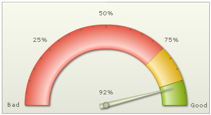 |
| Palette 2 applied |
| 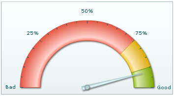 |
| Palette 3 applied |
Additionally, you can also define an entire new palette by setting a single theme color using: <chart paletteThemeColor='669933' ..> This will create a new palette derived from this color and then color the chart as under: |
| 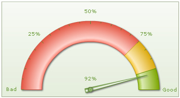 |
| Configuring gauge gradient fill |
FusionWidgets angular gauge allows you to configure the gradient fill mix of the gauge by specifying gradient fill formula as under: <chart ... gaugeFillMix='{light-10},{light-20},{light-60},{dark-30},{dark-40}, {dark-40}' gaugeFillRatio='' ..> Here, we've specified the fill mix as gradient formula (explained in section Advanced charting) and set gaugeFillRatio as empty (so as to instruct chart to automatically distribute the gradient color constituents). The color sequence starts applying from the inner side to outer side of the gauge i.e., first color specified would apply to the inner radius side and then move out towards outer radius. The gauge will look as under: |
| 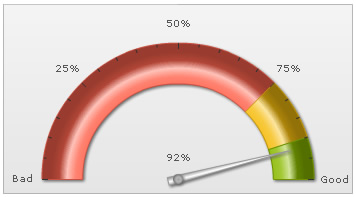 |
Another example: <chart ... gaugeFillMix='{dark-10},FFFFFF,{dark-10}' gaugeFillRatio='3' ..> It results in: |
| 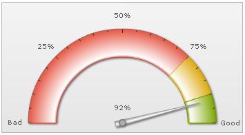 |
More example: <chart ... gaugeFillMix='{light-10},{light-30},{light-20},{dark-5},{color},{light-30},{light-20},{dark-10}' gaugeFillRatio='' ..> Resulting in: |
| 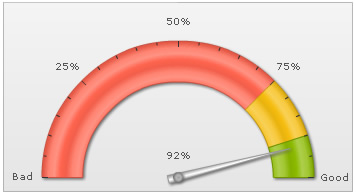 |
| Configuring gauge borders |
You can configure to show/hide the gauge border. Additionally, you can configure to show the entire border in single color or a color derived from the color range fill color. To hide the gauge border, you can set: <chart ... showGaugeBorder='0' ...> This will result in (we've removed the shadow from this gauge to make the hidden border's effect more pronounced): |
To set a single color as the border for entire gauge, you can set: <chart ... showGaugeBorder='1' gaugeBorderColor='666666' gaugeBorderThickness='1' gaugeBorderAlpha='100' ...> This will result in: |
| 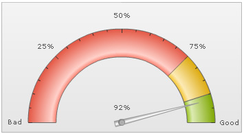 |
Or, you can also ask the chart to color each color scale's border in a derivative of its fill color using: <chart ... gaugeBorderColor='{dark-30}' ...> Here, we've used one token of the gradient fill mix to color each color range using 30% darker color than its fill color. It will result in: |
As you can see above, each color range now bears a border color, which is 30% darker than its fill color. Or, if you want a 60% lighter fill shade, you could set: <chart ... gaugeBorderColor='{light-60}' ...> You can also set the border property for each color range invidually by setting: <color minValue='0' maxValue='75' code='FF654F' borderColor='FF0000' borderAlpha='100'/> This will result in: |
| Configuring gauge radius and inner radius |
You can set the gauge outer and inner radius explicitly as under: <chart ... gaugeOuterRadius='130' gaugeInnerRadius='60' ...> This will result in: |
| 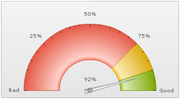 |
You can also set inner radius as percentage of outer radius as under: <chart ... gaugeOuterRadius='130' gaugeInnerRadius='80%' ..> This will result in: |
| 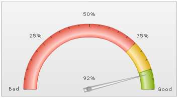 |
| Configuring pivot properties |
FusionWidgets angular gauge chart allows you to configure all aspects of the pivot including fill color, type, gradient, radius etc. To set the radius of pivot (in pixels), you can use: <chart ... pivotRadius='10' ..> This will result in: |
| 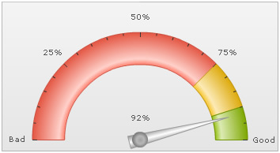 |
You can set a solid fill for the pivot, you can use: <chart ... pivotFillColor='333333' pivotFillAlpha='100' pivotFillMix='' ...> Here, we've asked the chart to not use any fill mix for pivot (by specifying pivotFillMix='') and then we've specified the color for the pivot. This will result in: |
You can add a border as under: <chart showPivotBorder='1' pivotBorderThickness='2' pivotBorderColor='333333' pivotBorderAlpha='100' pivotFillColor='CCCCCC' pivotFillAlpha='100' pivotFillMix='' ...> This will result in: |
You can also specify a gradient fill mix for the pivot using: <chart ... pivotFillColor='CCCCCC' pivotFillMix='{light-10},{light-30},{dark-20}' pivotFillRatio='' pivotRadius='7' ..> Here, we've specified a single color for pivot and then applied the gradient fill mix. We've set ratio empty, so that chart will auto-distribute the colors. It will result in: |
| 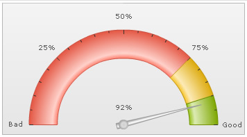 |
You can also specify linear (instead of radial) gradient fill type for pivot as under: <chart ... pivotFillColor='CCCCCC' pivotFillType='linear' pivotFillAngle='0' pivotFillMix='{light-40},{dark-60}' pivotFillRatio='' pivotRadius='7' showPivotBorder='1' pivotBorderColor='999999' ..> This will result in: |
| Customizing dial values |
FusionWidgets allows you to show/hide dial values and configure its placement too. To hide all dial values, you can set: <chart ... showValue='0' ...> This will hide value text boxes for all the dials. Or, if you want to show the dial value below the pivot, you can set: <chart ... valueBelowPivot='1' ...> Using STYLEs, you can also add border and background to your value textfield as under: |
| <styles> <definition> <style type='font' name='myValueFont' bgColor='F1f1f1' borderColor='999999' /> </definition> <application> <apply toObject='Value' styles='myValueFont' /> </application> </styles> |
| This will result in: |
| Additionally, for each dial on the chart, you can configure whether to show value or hide value for the same. Also, you can configure the x and y position as under: |
| <dials> <dial value='92'... showValue='1' valueX='150' valueY='120' /> <dial value='79' ... showValue='1' valueX='210' valueY='120'/> </dials> |
| Here, we've added 2 dials to chart and configured their value textfield positions individually. This will result in: |
| 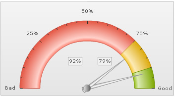 |